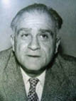

(1901 – 1962)

Edebiyat tarihimizde "Ne içindeyim zamanın / Ne de büsbütün dışında" dizeleriyle ölümsüzleşmiş olan Ahmet Hamdi Tanpınar sayıca az, ama içeriği zengin romanlarıyla ülkemizdeki Doğu-Batı ikilemi hakkında en derin gözlemlerle, en çarpıcı saptamaları yapmış yazarlardan biridir.
Türk edebiyatının en güçlü şair ve yazarlarından biri olan Ahmet Hamdi Tanpınar, 23 Haziran 1901'de İstanbul'da doğdu. Kadı Hüseyin Fikri Efendi'nin oğludur. 1923 yılında İstanbul Üniversitesi Edebiyat Fakültesi'ni bitirdi. Erzurum, Konya ve Ankara'daki liselerde ve yüksek okullarda verdiği çeşitli derslerin yanı sıra, Gazi Eğitim Enstitüsü'nde edebiyat hocalığı yaptı. 1933'ten sonra İstanbul'da Kadıköy Lisesi'nde edebiyat öğretmenliği yaptı. Güzel Sanatlar Akademisi'nde sanat tarihi ve estetik dersleri verdi. 1939 yılında İstanbul Üniversitesi'nde Yeni Türk Edebiyatı profesörlüğüne atandı. 1942-1946 yılları arasında CHP Maraş Milletvekili olarak görev yaptı. Bir süre Milli Eğitim müfettişliği de yapan Tanpınar, 1949 yılında Edebiyat Fakültesi Türk Dili ve Edebiyatı Bölümü'ndeki görevine döndü. Gençlik yıllarında Yahya Kemal ve Ahmet Haşim'in talebesi ve dostu oldu, Batı edebiyatından Paul Valéry ile Marcel Proust'u kendisine üstad olarak seçti. Bu yazarlar edebiyatta güzellik ve mükemmelliği ön plana çıkarmıştı. Onlara göre edebiyat, tıpkı resim ve müzik gibi "güzel sanat"tı; tek farkı boya ve ses yerine, insanı ve hayatı anlatmada bu iki araçtan çok daha zengin olan dili kullanmasıydı.
Adını ilk kez Altın Kitap dergisinde yayınlanan Musul Akşamları şiiriyle duyurdu. Dergah, Milli Mecmua, Hayat, Görüş, Ülkü, Varlık, Oluş, Kültür Haftası ve Aile dergilerinde şiirleri yayımlandı. Hece ölçüsüyle yazdığı bu ilk şiirler imge zenginliklikleri ve müzikal nitelikleriyle dikkat çekti. Edebiyat Fakültesi'nde öğrencisi olduğu Yahya Kemal Beyatlı'dan çok etkilendi. Ama ilk eserlerinde Yahya Kemal'den çok Ahmet Haşim'in izleri görülür. Haşim gibi o da küçük yaşta kaybettiği annesinin yokluğundan duyduğu acıyı ve kendisini avutacak bir sevginin özlemini dile getirdi. İçe dönük bir bakışla doğa ile iletişim kurmaya çalıştı. Şiirinin bir başka yönü Bergson felsefesine dayanan zaman kavramıydı. Onun eserlerinde zaman, basit bir süreklilik değil, çok katlı ve karmaşık bir akıştır. Ne İçindeyim Zamanın, Bursa'da Zaman şiirleri bu olgunun örnekleridir. Hayatının sonuna yakın çıkardığı tek şiir kitabında altmış kadar şiirinden yalnızca otuz yedisine yer verdi (Şiirler 1961; Bütün Şiirleri adıyla genişletilmiş olarak, 1976). İlk romanı Mahur Beste 1944'te Ülkü dergisinde yayınlandı. Osmanlı Devleti'nin son döneminde seçkin bir çevrenin yaşayışını sergileyen bu romanın ardından, kendi yaşamından da izler taşıyan Huzur 1949'da basıldı. Huzur hem bir aşk hem de Tanpınar'ın İstanbul'a olan derin sevgisinin romanıdır. Estetik anlayışını, kültür birikimini ve geçmiş kültürlere dayanan yaşam felsefesini yansıttığı bu kitabı, Tanpınar'ın en yetkin romanı sayılır. Romanda Mümtaz ile Nuran'ın aşkı çerçevesinde Doğu ile Batı, eski ile yeni, geçmişin değerleriyle var olan değerler, aşk ile toplumsal sorumluluk arasındaki çatışmayı ve bu çatışmanın doğurduğu bireysel bunalımları irdeledi. 1950'de Yeni İstanbul gazetesinde yayınlanan, ancak ölümünden sonra 1973'te basılan Sahnenin Dışındakiler ve 1961'de basılan Saatleri Ayarlama Enstitüsü'nde de iki uygarlık ve iki değer sistemi arasında bocalayan Türk toplumunun ironik tablosu çizilir. Ölümünden sonra notlarına dayanılarak bir araya getirilen ve 1987'de yayınlanan Aydaki Kadın'da da aynı irdeleme vardır. Şiir, roman ve yazılarının yanı sıra İstanbul, Bursa, Ankara, Erzurum ve Konya kentlerini doğal, tarihsel ve kültürel yapılarıyla anlattığı ve 1946'da basılan Beş Şehir de önemli eserleri arasındadır.
Çeşitli baskıları olan eserleri Dergah Yayınları'nda toplandı. Enis Batur 1992 yılında Ahmet Hamdi Tanpınar'dan Seçmeler adlı bir kitap hazırladı. Yazar ile ilgili yayımlanmış en son eser, 2007 yılının sonunda çıkan Günlüklerin Işığında Tanpınar'la Baş Başa'dır. Eser, Tanpınar'ın 1953 yılında yazmaya başladığı ve 1962 yılında vefatına kadar tuttuğu notlardan oluşmaktadır.
Hayatı boyunca sağlığından şikayetçi olan Tanpınar, 23 Ocak 1962 günü geçirdiği kalp krizi nedeniyle Haseki Hastanesi'ne kaldırıldı. Ertesi sabah, ikinci bir krizle hayata veda etti. Ahmet Hamdi Tanpınar, Rumeli Hisarı Kabristanı'nda, hocası ve dostu Yahya Kemal'in yanı başında toprağa verildi.
Romanları: Mahur Beste (tefrika: 1944 – basım: 1975), Huzur (t: 1949- b: 1983), Sahnenin Dışındakiler (t:1950- b:1973), Saatleri Ayarlama Enstitüsü (t: 1961- b:1977), Aydaki Kadın (ölümünden sonra basımı: 1987)